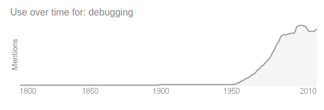
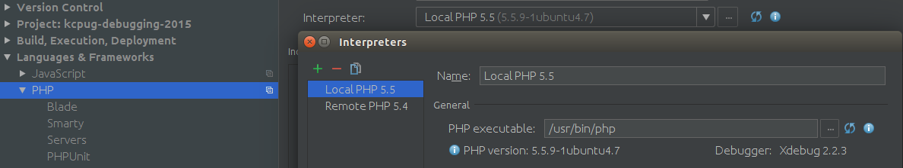

Modern Debugging in PHP
Or: What to do when your code plays tricks on you
Dan Holmes @ April 1st, 2015
Kansas City PHP User's Group
Who is this talk for?
You
Assuming you do anything with PHP
Debugging
... a methodical process of finding and reducing the number of bugs, or defects, in a computer program...thus making it behave as expected. 
Source: wikipedia, Google
When I say Bugs...
- Things your users find that just "aren't possible"
- Error messages you see in your logs
- Problems during development
- Curiosities
PHP Built-ins
- Error Reporting (to screen)
- Error logging
- print_r
- var_dump
- debug_backtrace
Error Reporting (to Screen)
Error Reporting (to Log)
Error Reporting (to Log with Info)
Backtrace
Error Reporting (Writing trace to the error log)
Error Reporting (Writing better trace to the error log)
Inspecting Variables with print_r()
Inspecting Variables with print_r() returning string
Inspecting Variables with var_dump()
"Lightly" Inspecting Variables with json_encode()
PHP built-ins - Quick Review
- Error Handling
- error_reporting
- error_log
- ini settings like display_errors, log_errors, etc
- Backtrace
- debug_backtrace()
- Exception->getTraceAsString()
- Inspecting Variables
- print_r
- print_r return as string
- var_dump
- "serialize" functions like json_encode()
for debugging only, you can set "breakpoints" with die() or exit()
Modern?
Modern:
- Shouldn't need to update code
- Shouldn't need to remember to update code again when you are done
- Hope you didn't break something / leave something in
- Out of the way until we need it
- Or, maybe just LOOKS nice!
Catch Exceptions with Whoops!
Catch Exceptions with Whoops!
https://github.com/filp/whoops
composer require flip/whoops
Monitor the things with a debug bar!
composer require maximebf/debugbar
Var_dump made nicer
With Symfony VarDumper and XDebug
xdebug!
- NO need to update code
- NO need to remember to update code again when done
- Out of the way until we need it
- Depending on IDE: just LOOKS nice!
xdebug Demo!
- Inspecting (changing) Variables
- Backtrace (Frames)
- Breakpoints
- Step over, step into, step out
- Break on specific values
configure xdebug
Your mileage WILL vary
- OS
- PHP Version
- IDE
- Local, Local VM or Remote?
Step 1. Register xDebug and settings with PHP
apt-get install php5-xdebug; # download xdebug
vim /etc/php/cli/conf.d/20-xdebug.ini # configure xdebug
zend_extension=xdebug.so
xdebug.remote_enable=1
xdebug.remote_port=9900
xdebug.profiler_enable=1
Step 2. Setup your IDE (phpStorm shown)


Step 3: Make some Bookmarklets https://www.jetbrains.com/phpstorm/marklets/
Start Debug
javascript:(
/** @version 0.5.2 */
function() {
document.cookie='XDEBUG_SESSION='+'PHPSTORM'+';path=/;';
}
)()
Stop Debug
javascript:(
/** @version 0.5.2 */
function() {
document.cookie='XDEBUG_SESSION='+''
+';expires=Mon, 05 Jul 2000 00:00:00 GMT;path=/;';
}
)()
walk away
Sometimes it's best to get out of your head and out of your code.
REPLs
Read-Eval-Print-Loop
- php -a well, maybe
- Boris
- PsySh My Fav! Thx Eric!
- phpsh
Online "REPLs"
3v4l.org
phpepl
and sometimes you need...
PHP Live Regex
JSFiddle
SQL Fiddle
phpunit!
- NO need to update code
- NO need to remember to update code again when done
- Out of the way until we need it
- Depending on reports: just LOOKS nice!
Best of all!
once debugged, always debugged!
But that's a whole other talk